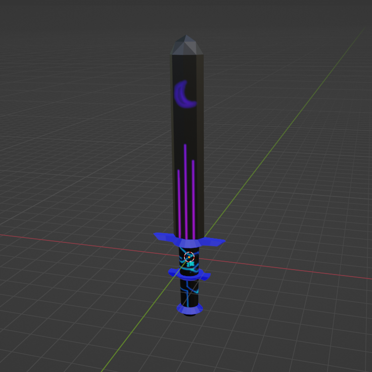

big foam sword

summary
At one point, I had an absolute obsession with medieval weaponry.
I had been playing a lot of Blade and Sorcery at the time,
a VR fantasy fighting game which pretty much played like a rage room
with humans as furniture.
At some point in this phase I realized that in the real world foam
boffers exist, aka tools for whacking people without hurting them, so I immediately
decided I needed to have one of my own. Me being me, though, I wanted to do things
in my own style rather than just getting a foam boffer from Amazon or even using
one of the ones my parents had back from their LARPing days, so I pretty much googled
"how to make a custom foam boffer" and went for it(with the help of my parents)

design
I started out with a drawing, and then made a model. I figured that whatever I was gonna do, I wouldn't start until I had at least rendered it in some fashion to see what it would look like. Then, once I was satisfied, I went to home depot to get the materials. I knew I would need camp foam, since it would easily hold shape, and I knew I would need some solid pieces to hold the thing together (which ended up being PVC and tent rod). I also figured I'd get some colored duct tape, since I wanted to make this thing look pretty. Once I got home, I set everything down and started to get to work.
making the thing
As far as I remember, I started out by cutting all the pieces to the right length(the handle and the tent rod).
Then, I taped a coin to the bottom of the pvc "handle" and proceeded to pour dirt in to sort of shift the weight away
from the soon-to-be blade. Before I got to carving the main blade, I took small pieces of the camp foam and carved them out
to make the handguards and such so I wouldn't have any issues with aligning things as I moved forward.
The next day, I started cutting out a sizable rectangle of the camp foam, with two layers stacked on top of eachother. This was because
in order to make things fit, the foam blade would have to be done in two layers that sort of "clamp" around a tent rod in the center.
I carved a line down the center of both sides, in order to make sure the tent rod was properly seated in between the layers and had maximum surface area,
and then I glued the whole thing together. It was still a rectangle at this stage, but that was intentional; I wanted everything in place first so it would
line up when I carved it rather than having a weird seam at the sides. I also took out some regular foam we had lying around from an old mattress topper in order
to make a soft, squishy part on top(so the tent rod wouldn't come bursting out the end and stab someone when you went to hit someone with the tip)
Finally, I used an oscillating blade(forgot what it was called) to quickly shave down the final shape of the blade. I may have had to put some extra glue down,
since I didn't use enough initially, but after a while it held up pretty well and was ready to get taped up and decorated. I took the sword inside(I had been
doing most of the carving work on my back porch) and started wrapping the whole thing up in duct tape, starting with a black base. It was at this point in time
that I also connected the handle by sticking the tent rod into the dirt I had poured into the pipe(after I had attached all the handguards) and afterwards
reinforced the connection with duct tape from the blade to the main handgaurd. I also used electrical tape instead of duct tape(as suggested by my mom) to wrap up the handle,
in order to give the handle a nice grippy, cloth-looking finish. I inspected each side to make sure there were no holes left to see the foam from, and finally took it outside
to give it a spin.
the result
It was heavy. But as I stood there, swinging my giant sword around like a lunatic, I felt accomplished. This was one of the few times where I actually managed to see a project to completion, and I was proud of it. I had this awesome looking weapon in my hands, which was only half in danger of breaking the moment I hit something, and was almost as tall as I am(which meant I could hit some awesome poses while holding it.) I told all of my 3 friends at the time, put the sword away in my room, and realized I had a bunch of foam and other supplies lying around. I couldn't possibly let all that stuff go to waste, so afterwards I made:
- a small knife
- a throwing brick that unfortunately looked like an improvised explosive
- some brass knuckles and
- a proper tube boffer(using pool noodles and PVC instead of camp foam)